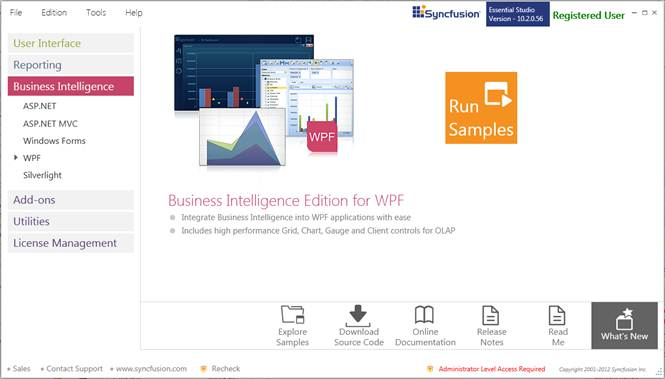
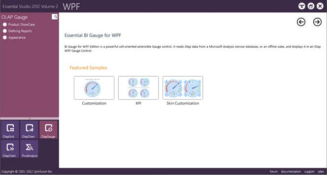

This section covers the location of the installed samples and describes the procedure to run the samples through the sample browser and online. It also provides the location of the source code.
Samples Installation Location
The OLAP Gauge samples are installed, locally on the disk in the following location:
Windows XP:
C:\Syncfusion\Essential Studio<version number>\BI\WPF\OlapGauge.WPF\Samples\
Windows 7/Vista:
C:\Users\<User Name>\AppData\Local\Syncfusion\EssentialStudio\Essential Studio <version number>\BI\WPF\OlapGauge.WPF\Samples
Viewing Samples
To view the samples, follow the steps given below:
1. Click StartàAll ProgramsàSyncfusionàEssential Studio <version number> àDashboard.

Figure 2: Syncfusion Essential Studio Dashboard BI
2. In the Dashboard window, click Run Samples for WPF under BI Edition. The BI WPF Sample Browser window is displayed.
 Note: You can view the samples in any of the
following three ways:
Note: You can view the samples in any of the
following three ways:
· Run Locally Installed Samples-Click to view the locally installed samples.
· Online Samples-Click to view online samples.
· Explore Samples-Explore BI WPF samples on disk.

Figure 3: BI WPF Sample Browser
3. Click OLAP Gauge. The OLAP Gauge samples are displayed.

Figure 4: OLAP Gauge Samples displayed in the BI WPF Sample Browser
4. Select any sample and browse the features.
Source Code Location
The default location of the OLAP Gauge source code is:
[System Drive]:\Program Files\Syncfusion\Essential Studio\[Version Number]\BI\OlapGauge.WPF\Src